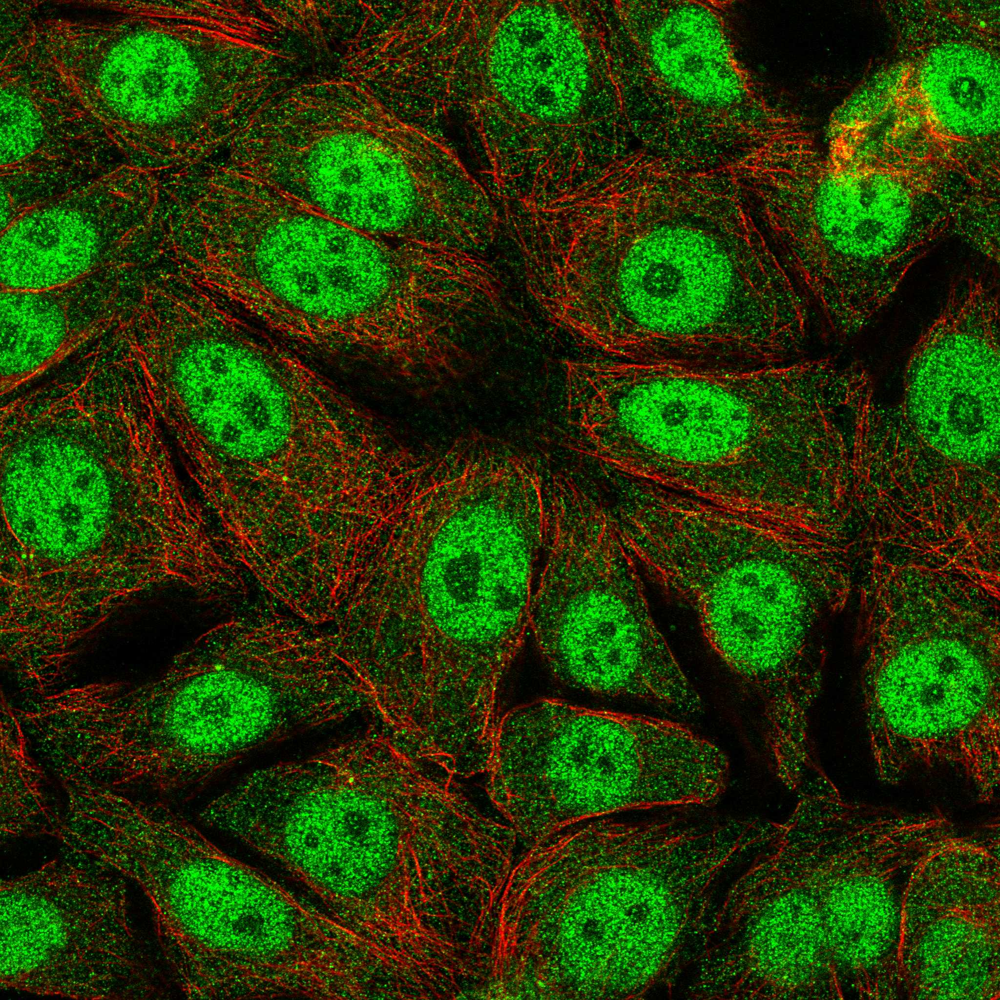
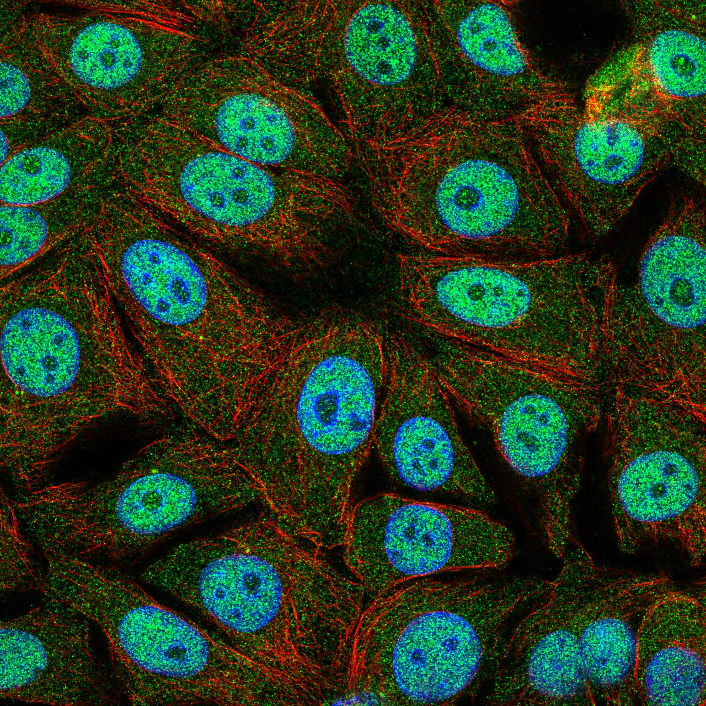
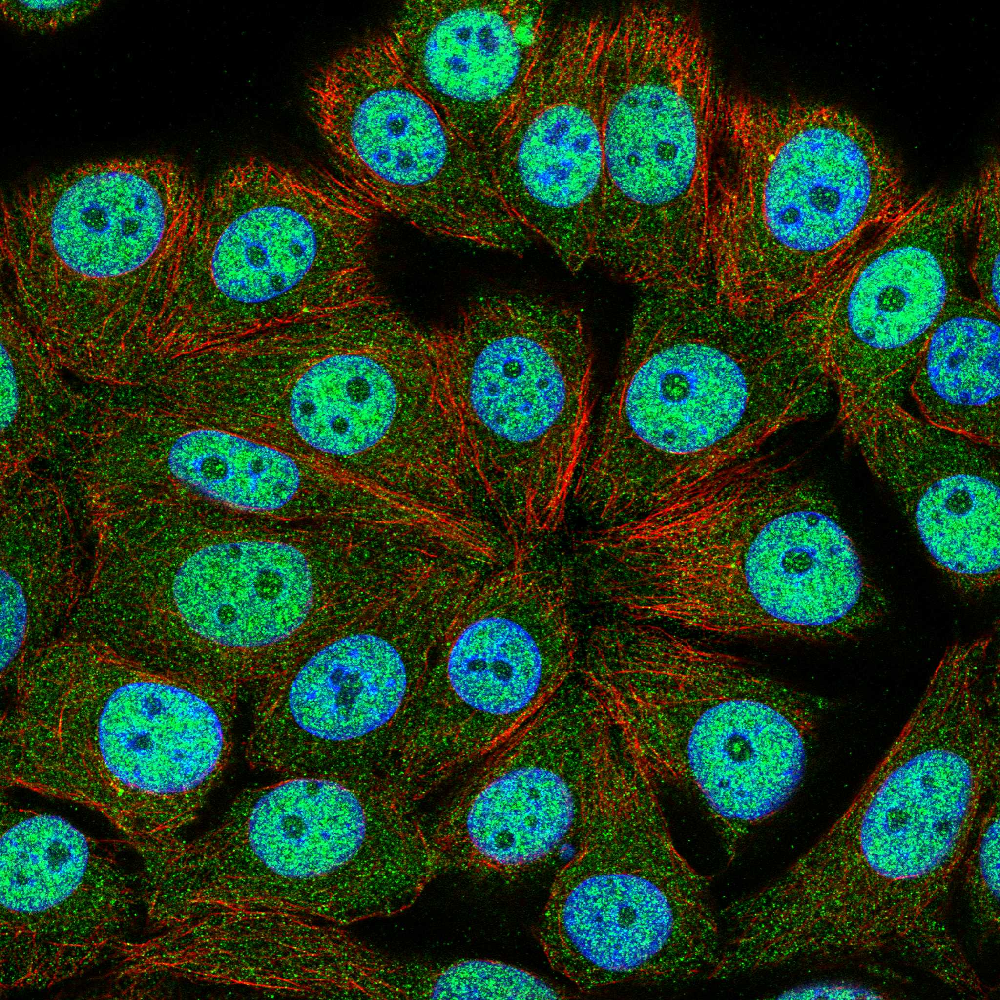

type: protein-evaluation gene: "ANP32E" date: 2026-06-01 tags: [protein-scout, nucleoplasm, evaluation] status: scored ---
ANP32E 核蛋白评估报告
1. 基本信息
| 项目 | 内容 |
|---|---|
| 基因名 | ANP32E |
| 蛋白全名 | Acidic leucine-rich nuclear phosphoprotein 32 family member E |
| 蛋白大小 | 268 aa / ~30 kDa |
| UniProt ID | Q9BTT0 |
2. 评分总览
| 维度 | 得分 | 权重 | 加权 | 证据摘要 |
|---|---|---|---|---|
| 核定位特异性 | 8/10 | ×4 | 32.0 | ANP32 nuclear phosphoprotein; SWR1 complex (H2A.Z deposition); GO nucleus IDA:LIFEdb; UniProt Nucleus |
| 蛋白大小 | 8/10 | ×1 | 8.0 | 268 aa |
| 研究新颖性 | 6/10 | ×5 | 30.0 | PubMed strict=52 (≤60) |
| 三维结构 | 7/10 | ×3 | 21.0 | pLDDT 76.4; 2 PDB (X-ray 3.0 Å) |
| 调控结构域 | 7/10 | ×2 | 14.0 | Leucine-rich repeat; H2A.Z histone chaperone; SWR1/SRCAP complex |
| PPI 网络 | 8/10 | ×3 | 24.0 | H2AZ1 (0.996), EP400 (0.992), KAT5 (0.984) — chromatin remodeling |
| 加权总分 | 129/180******** | |||
| 互证加分 | +2.0 | SWR1 chromatin complex + H2A.Z chaperone + ANP32 nuclear family | ||
| 归一化总分 (÷1.83) | 70.5/100******** |
PubMed strict: 52
3. 核定位证据
| 来源 | 定位 | 可信度 |
|---|---|---|
| UniProt | Cytoplasm (ECO:0000250); Nucleus (ECO:0000250) | Sequence similarity |
| GO-CC | nucleus IDA:LIFEdb; Swr1 complex IDA:UniProtKB; synaptic vesicle membrane IEA | Direct assay (nucleus) |
| Protein family | ANP32 — Acidic Nuclear Phosphoprotein 32 | Naming |
| HPA IF | Nucleoplasm + Nuclear membrane (main) | HPA localization available |
HPA IF 数据: HPA subcellular localization available. Full red_green IF image acquired (776 KB). Antibody HPA041206.

HPA IF 状态: IF full acquired — HPA IF 原图 (red_green, 776 KB) 已成功获取并嵌入。HPA 数据库包含 24 张 red_green IF 图像。
ANP32E 是 ANP32 (acidic nuclear phosphoprotein) 家族成员。作为 H2A.Z 组蛋白伴侣和 SWR1/SRCAP 染色质重塑复合体组分，其核定位是功能必需的。GO nucleus IDA:LIFEdb 为荧光显微镜实验确认。
4. 研究现状
| 指标 | 数值 |
|---|---|
| PubMed strict | 52 |
| PubMed broad | 85 |
关键文献: ANP32E 是 H2A.Z 特异的组蛋白伴侣，催化 H2A.Z-H2B 在染色质上的沉积和移除，调控转录、DNA repair、染色体分离。与 EP400 (SWR1/SRCAP ATPase) 和 KAT5 (Tip60 乙酰转移酶) 形成染色质重塑复合体。文献涵盖 H2A.Z 生物学、癌症表观遗传学和胚胎发育。
5. 三维结构
| 指标 | 数值 |
|---|---|
| AlphaFold pLDDT | 76.4 (mean) |
| pLDDT >90 | 53.7% |
| pLDDT 70-90 | 22.8% |
| pLDDT 50-70 | 8.9% |
| pLDDT <50 | 14.6% |
| PDB | 2 structures (X-ray, ~3.0 Å, C-terminal domain) |
| Domain | ANP32 family leucine-rich repeat; H2A.Z binding |
PAE: PAE 图像已获取。
6. PPI 网络
Chromatin remodeling complex
| Partner | 来源 | Score/Evidence | 功能 |
|---|---|---|---|
| H2AZ1 | STRING | 0.996 | Histone H2A.Z (SWR1 substrate) |
| EP400 | STRING | 0.992 | SWR1/SRCAP ATPase subunit |
| KAT5 | STRING | 0.984 | Tip60 acetyltransferase |
| RUVBL1 | STRING | 0.980 | Pontin, INO80/SWR1 AAA+ ATPase |
| RUVBL2 | STRING | 0.980 | Reptin, INO80/SWR1 AAA+ ATPase |
| ACTL6A | STRING | 0.971 | Actin-like, SWR1 subunit |
| DMAP1 | STRING | 0.968 | SWR1 subunit |
| YEATS4 | STRING | 0.967 | SWR1 subunit |
| SRCAP | STRING | 0.953 | SWR1 ATPase (alternative to EP400) |
IntAct: 15 条记录 (含 ANP32B, SET, HMGA1 等核蛋白)。UniProt curated: Swr1 complex IDA。
PPI 评述: ANP32E 的 PPI 网络极其强大且功能明确，完全围绕 H2A.Z 组蛋白沉积的 SWR1/SRCAP 染色质重塑复合体。9 个 STRING partners 分数 >0.95，全部为已知 SWR1 亚基或直接功能伙伴。该网络明确支持染色质/nucleoplasm 定位和 TE 调控潜力。
7. 总体评价
ANP32E 是 H2A.Z 组蛋白伴侣和 SWR1/SRCAP 染色质重塑复合体核心组分。核定位证据充分 (ANP32 nuclear phosphoprotein 家族 + GO nucleus IDA:LIFEdb + HPA IF 图像)。PPI 网络极为强大（9 个 >0.95 partners，全部为 SWR1 染色质重塑亚基）。H2A.Z 沉积直接调控染色质结构和转录，与 TE 沉默高度相关。归一化 71.6/100。建议作为中-高优先级 nucleoplasm/chromatin 候选。PubMed strict=52 接近新颖性上限 (≤60=6分)，但仍有进一步机制研究空间。
8. 数据来源
- UniProt: https://www.uniprot.org/uniprotkb/Q9BTT0
- AlphaFold: https://alphafold.ebi.ac.uk/entry/Q9BTT0
- PubMed: https://pubmed.ncbi.nlm.nih.gov/?term=ANP32E
- HPA: https://www.proteinatlas.org/search/ANP32E
 
PPI 网络
| Partner | Source | Score/Evidence |
|---|---|---|
| H2AZ1 | STRING | 0.996 |
| EP400 | STRING | 0.992 |
| KAT5 | STRING | 0.984 |
| TRRAP | STRING | 0.953 |
| BRD8 | STRING | 0.95 |
| EBI-2797317 | IntAct | psi-mi:"MI:0398"(two hybrid po |
| SMAD2 | IntAct | psi-mi:"MI:0034"(display techn |
| NR4A2 | IntAct | psi-mi:"MI:0034"(display techn |
关键文献
| PMID | 标题 |
|---|---|
| 37816720 | Creating resistance to avian influenza infection through genome editing of the ANP32 gene family. |
| 14964690 | Anp32e (Cpd1) and related protein phosphatase 2 inhibitors. |
| 39365860 | Cell type-specific epigenetic priming of gene expression in nucleus accumbens by cocaine. |
| 38482865 | ANP32e Binds Histone H2A.Z in a Cell Cycle-Dependent Manner and Regulates Its Protein Stability in t |
| 33033242 | Genome-wide chromatin accessibility is restricted by ANP32E. |
HPA IF 图像已本地嵌入。
PAE 图像说明: AlphaFold PAE 图像已重新获取并嵌入（见下方 PAE 图像修正块）；结构判断仍结合 pLDDT 与 PAE 综合判断。
<!-- AF_PAE_REPAIR_START --> PAE 图像修正（2026-06-05）: AlphaFold 提供 predicted aligned error 图像；此前“PAE 图像暂无数据”的表述为未获取/未嵌入导致。

<!-- DOMAIN_HUMANPPI_REPAIR_START -->
Domain/SMART 与 humanPPI 补充（2026-06-06）
SMART / UniProt domain
| Source | Data |
|---|---|
| UniProt | Q9BTT0 |
| SMART | 未在 UniProt xref 中检出 SMART 条目 |
| UniProt Domain [FT] | DOMAIN 123..161; /note="LRRCT" |
| InterPro | IPR045081;IPR001611;IPR032675; |
| Pfam | PF14580; |
humanPPI / HPA Interaction
Source: https://www.proteinatlas.org/ENSG00000143401-ANP32E/interaction
| Partner | Datasets | AF3/HPA structure |
|---|---|---|
| H2AZ1 | Intact, Biogrid, Bioplex | true |
| KPNA1 | Biogrid, Bioplex | true |
| KPNA6 | Biogrid, Bioplex | true |
| BRD7 | Biogrid | false |
| DMAP1 | Intact | false |
| EPC2 | Intact | false |
| H2AC11 | Bioplex | false |
| H2AC13 | Bioplex | false |
<!-- DOMAIN_HUMANPPI_REPAIR_END -->